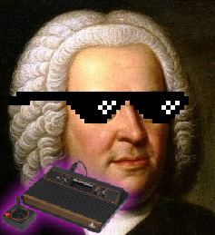

Atari 2600 Music Explorer (
https://pizzatari.github.io/atari2600music
)
Atari Options
NTSC (60 Hz)
PAL (50 Hz)
Video/Audio format
0 or 11 (silence)
1 (buzzy high pitch)
2 (noisy engine)
3 (buzzy engine)
4 or 5 (pure high tone)
6 or 10 (buzzy pure)
7 or 9 (buzzy medium pitch)
8 (noise)
12 or 13 (pure medium tone)
14 (low rumble)
15 (loud rumble)
Atari tone (AUDC0)
0 or 11 (silence)
1 (buzzy high pitch)
2 (noisy engine)
3 (buzzy engine)
4 or 5 (pure high tone)
6 or 10 (buzzy pure)
7 or 9 (buzzy medium pitch)
8 (noise)
12 or 13 (pure medium tone)
14 (low rumble)
15 (loud rumble)
Atari tone (AUDC1)
Piano Options
12-TET
Tuning method
A4 frequency (Hz)
Transpose (cents)
Microtones per key
Tuning sensitivity (cents)
Result Options
Color Gradient
♯♭
as rows
♯♭
black keys
Geometry
Freq.
Shrink
Scroll to Atari
Enable Sound
Reload Defaults
Info
Total in "tune":
0
/ Avg cents:
0
Cent range:
0
Cent Distribution over Atari Pitches (31 → 0):
"Tuned" Notes
Major Chords
Output
Print Page
Hide UI
